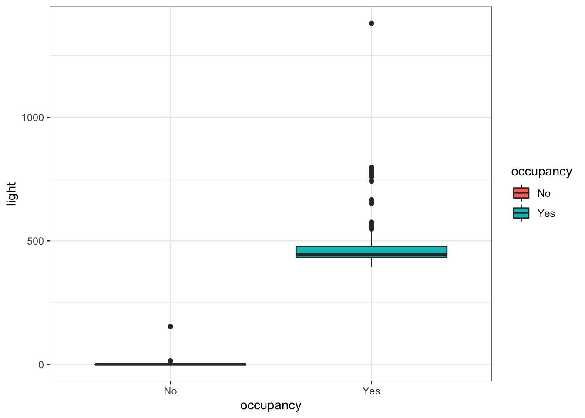

library(data.table)
library(GGally)
library(caret)
library(recipes)
library(janitor)
library(ggmosaic)
library(pROC)
library(tidyverse)
library(tictoc)
theme_set(theme_bw())complete seperation
설명변수를 이용해서 반응변수를 완벽하게 예측할 수 있는 경우를 의미함
설명변수를 이용해서 반응변수를 거의 완벽하게 예측할 수 있는 경우 quasi-complete seperation 이라고 함
complete seperation 예제
| Y | X1 | X2 |
|---|---|---|
| 0 | 1 | 3 |
| 0 | 2 | 2 |
| 0 | 3 | -1 |
| 0 | 3 | -1 |
| 1 | 5 | 2 |
| 1 | 6 | 4 |
| 1 | 10 | 1 |
| 1 | 11 | 0 |
- \(X_1\le 3\)일 경우 \(Y=0\)이고, \(X_1>3\)일 경우 \(Y=1\)로 완벽하게 분리됨
왜 complete seperation이 문제인가?
- Logistic regression의 경우 MLE로 회귀계수를 추정할 때 수치적인 알고리즘을 이용하여 계산하는데 complete seperation일 경우 알고리즘이 수렴하지 않는 문제가 발생할 수 있음
dat <- data.frame(x1 = c(1, 2, 3, 3, 5, 6, 10, 11),
x2 = c(3, 2, -1, -1, 2, 4, 1, 0),
y = c(0, 0, 0, 0, 1, 1, 1, 1))fit <- glm(y~., family = binomial, dat)
fit$fitted.values 1 2 3 4 5 6
2.220446e-16 9.861322e-11 3.179312e-12 3.179312e-12 1.000000e+00 1.000000e+00
7 8
1.000000e+00 1.000000e+00 glm.fit: fitted probabilities numerically 0 or 1 occurredwarning message 출력예측 확률이 0, 1에 거의 근접한 값이 나왔기 때문에 발생함
즉, 너무 완벽하게 예측했을 경우 발생함
glm.fit: algorithm did not convergewarning message 출력- MLE를 계산할 때, 알고리즘이 수렴하지 않을 경우 발생함
Complete seperation이 발생할 경우 해결책
1. Complete seperation을 발생하게 하는 설명변수 제거
complete seperation이 일어나는 경우는 \(Y\)와 너무 밀접하게 연관된 \(X\) 변수를 수집했을 때 발생합니다. 혹은, 데이터가 매우 작은 경우 데이터 수집과정에서 우연히 발생할 수도 있을 것입니다. 먼저, complete seperation이 일어나게 하는 설명변수 \(X\)가 타당한 설명변수인지 생각해봐야 합니다. 아래 예제 데이터를 보겠습니다.
Data description
temperature : 온도(섭씨)
Humidity : 습도(%)
Light : 밝기(lux)
Co2 : 이산화탄소 농도(ppm)
Occupancy : 방 이용 유무(1 : 이용 x, 0 : 이용 o)
https://archive.ics.uci.edu/ml/datasets/Occupancy+Detection+
온도, 밝기, 습도, 이산화탄소 농도 등의 변수를 활용해서 방 이용 유무를 예측하는 이진 분류 문제입니다.
dat <- read.csv('/Users/sangdon/myblog/posts/com_sep/dat9.csv')먼저, train/test를 나누고 EDA를 진행해보겠습니다.
dat %>% summary() temperature humidity light co2
Min. :19.20 Min. :17.60 Min. : 0.0 Min. : 418.0
1st Qu.:21.29 1st Qu.:25.21 1st Qu.: 428.2 1st Qu.: 697.0
Median :21.79 Median :27.94 Median : 444.0 Median : 891.2
Mean :21.78 Mean :28.18 Mean : 424.5 Mean : 928.0
3rd Qu.:22.20 3rd Qu.:31.26 3rd Qu.: 472.3 3rd Qu.:1069.4
Max. :24.39 Max. :39.07 Max. :1380.0 Max. :2022.5
NA's :5
occupancy
Min. :0.00
1st Qu.:1.00
Median :1.00
Mean :0.88
3rd Qu.:1.00
Max. :1.00
dat <- dat %>%
mutate(occupancy = factor(occupancy, labels = c("No", "Yes")))
library(rsample)
set.seed(1231)
splits <- initial_split(dat, prop = 0.7, strata=occupancy)
train<-training(splits)
test<-testing(splits)rec <- train %>%
recipe(occupancy~.) %>%
step_bagimpute(co2, impute_with=imp_vars(all_predictors()))
train<- rec %>% prep() %>% juice()
test <- rec %>% prep() %>% bake(new_data=test)
train %>% is.na() %>% colSums()temperature humidity light co2 occupancy
0 0 0 0 0 다른 전처리는 하지 않고, 결측치 대치만 진행한 후, logistic regression 모형을 적합해보겠습니다.
set.seed(1)
control <- trainControl(method='cv',
number=3,
classProbs = T,
summaryFunction = twoClassSummary,
savePredictions = "all"
)
tic()
glm_gridsearch <- train(occupancy ~ .,
data = train,
method = 'glm',
family = "binomial",
trControl = control,
metric = "ROC")
toc()0.187 sec elapsed다음과 같은 warning message가 출력됩니다.
glm.fit: algorithm did not converge
glm.fit: fitted probabilities numerically 0 or 1 occurred
위에서 설명했던 것처럼 complete seperation이 있을 때에 해당합니다. 따라서 데이터를 보고 어떤 설명변수 \(X\)가 이러한 문제를 발생시켰는지 확인이 필요합니다.
train %>%
ggplot(aes(x = occupancy, y = light, fill = occupancy)) +
geom_boxplot()
train %>%
group_by(occupancy) %>%
summarise(min = min(light),
mean = mean(light),
max = max(light))# A tibble: 2 × 4
occupancy min mean max
<fct> <dbl> <dbl> <dbl>
1 No 0 6.68 153
2 Yes 393 481. 1380occupancy ~ light의 boxplot과 통계량을 보면 occupancy가 \(No\)일 때, light는 대부분 \(0\)의 값을 갖고, 최대값은 \(153\)입니다. 반면, occupancy가 \(Yes\)일 때, light는 \(393 \sim 1380\)까지의 값을 갖는 것을 알 수 있습니다.
변수의 의미를 생각해보면 방을 이용하지 않을 경우 불은 꺼져있을 것이고, 방을 이용할 경우 불이 켜져있는 것은 당연하다고 볼 수 있습니다. 따라서 이상치가 없다는 가정 하에 light 변수가 설명변수에 있을 경우 occupancy를 정확히 예측할 수 있습니다.
이러한 예제의 경우 light 변수를 제거하지 않고, 모형에 포함시키는 것이 합리적입니다. 다만, 데이터가 작을 경우, 연관성이 없는 변수에 대해 이러한 현상이 발생할 수 있습니다. 혹은 반응변수의 의미와 완벽하게 중복되는 설명변수가 포함되는 경우도 있을 수 있습니다. 이러한 경우 변수를 제거하는 것이 합리적일 것입니다.
이렇듯, 분석가의 판단 하에 변수를 제거할지 여부를 판단하는 것이 필요합니다.
2. Logistic regression 모형 말고 다른 모형 적합
Logistic regression 모형이 아닌 다른 ML 모형의 경우 (ex. tree based model) complete seperation 문제 때문에 계산이 안되는 문제는 없기 때문에 다른 모형을 적합하면 됩니다.
3. Penalized logistic regression
Logistic regression 모형에 penalty term을 추가할 경우 logistic regression의 알고리즘이 수렴하지 문제를 해결할 수 있습니다.
#devtools::install_version("LiblineaR", version = "2.10-8")
set.seed(1231)
control<-trainControl(method="cv",
number=5,
classProbs=T,
summaryFunction=twoClassSummary,
savePredictions = T)
logistic_gridsearch<-train(occupancy~.,
data=train,
method="regLogistic",
trControl=control,
tuneLength=3,
metric="ROC")
logistic_gridsearchRegularized Logistic Regression
209 samples
4 predictor
2 classes: 'No', 'Yes'
No pre-processing
Resampling: Cross-Validated (5 fold)
Summary of sample sizes: 168, 167, 167, 167, 167
Resampling results across tuning parameters:
cost loss epsilon ROC Sens Spec
0.5 L1 0.001 1 0.96 1
0.5 L1 0.010 1 1.00 1
0.5 L1 0.100 1 1.00 1
0.5 L2_dual 0.001 1 0.96 1
0.5 L2_dual 0.010 1 0.96 1
0.5 L2_dual 0.100 1 0.96 1
0.5 L2_primal 0.001 1 0.96 1
0.5 L2_primal 0.010 1 0.96 1
0.5 L2_primal 0.100 1 0.96 1
1.0 L1 0.001 1 1.00 1
1.0 L1 0.010 1 1.00 1
1.0 L1 0.100 1 0.96 1
1.0 L2_dual 0.001 1 0.96 1
1.0 L2_dual 0.010 1 0.96 1
1.0 L2_dual 0.100 1 0.96 1
1.0 L2_primal 0.001 1 0.96 1
1.0 L2_primal 0.010 1 0.96 1
1.0 L2_primal 0.100 1 0.96 1
2.0 L1 0.001 1 0.96 1
2.0 L1 0.010 1 0.96 1
2.0 L1 0.100 1 1.00 1
2.0 L2_dual 0.001 1 0.96 1
2.0 L2_dual 0.010 1 0.96 1
2.0 L2_dual 0.100 1 0.96 1
2.0 L2_primal 0.001 1 0.96 1
2.0 L2_primal 0.010 1 0.96 1
2.0 L2_primal 0.100 1 0.96 1
ROC was used to select the optimal model using the largest value.
The final values used for the model were cost = 0.5, loss = L1 and epsilon
= 0.001.해당 데이터의 경우 ADP 23회 기출문제입니다. 시험 답안을 작성하실 때, 어떻게 작성하면 좋을지 한번 생각해보세요!